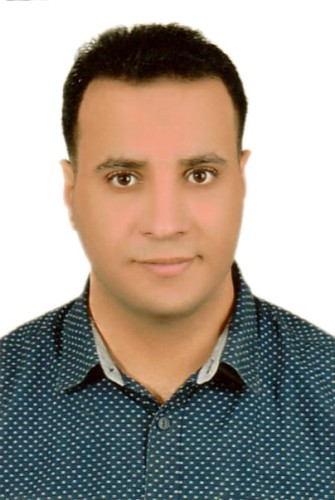

Rigorous AI researcher and Ph.D. graduate specializing in generative modeling architectures (Diffusion Models, GANs, Vision Transformers) for computer vision, remote sensing, and robotics integration.

Peer-Reviewed Publications
H-index (ResearchGate)
H-index (Google Scholar)
CVPR 2025 NTIRE Challenge
Awarded 2nd place in the international NTIRE Challenge on Night Photography Rendering at IEEE/CVF CVPR 2025.
Title: Dual-Branch Attention Network for Dynamic Illumination Enhancement in Nighttime Images.
Awarded for exceptional scientific contributions and advancements in Artificial Intelligence research.
Dissertation: "Optimized Algorithms for Multimedia Restoration in Computer Vision Applications"
Focus: Developing Multi-Attention Vision Transformers and Iterative Diffusion Models for high-fidelity multimedia restoration across RGB images, remote sensing satellite data, and clinical dermoscopic medical imaging.
Thesis: "Utilization of Deep Learning Techniques for Efficient Medical Images Super Resolution"
A modular framework integrating Large Language Models (LLMs) with multimodal sensing (audio, vision, and actuator data). Designed for robotic control and highly effective for human action recognition in healthcare. Emphasizes compact prompt-to-action pipelines and real-time human-AI collaboration.
Efficient architectures for medical image enhancement, lesion detection, and cancer diagnosis utilizing diffusion modeling and transformer architectures under limited clinical data.
Professor, Alfaisal University
Executive Director of Innovation Center, Prince Sultan University
Professor, Menoufia University
Princess Nourah bint Abdulrahman University